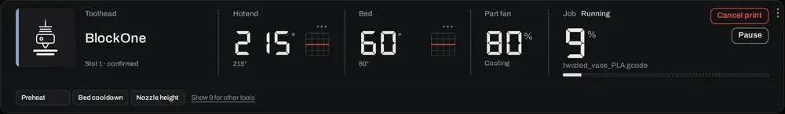
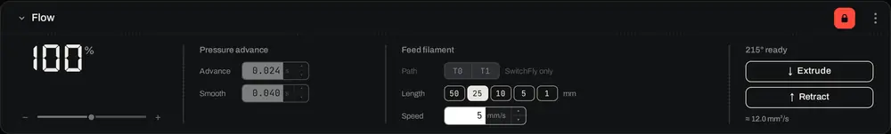
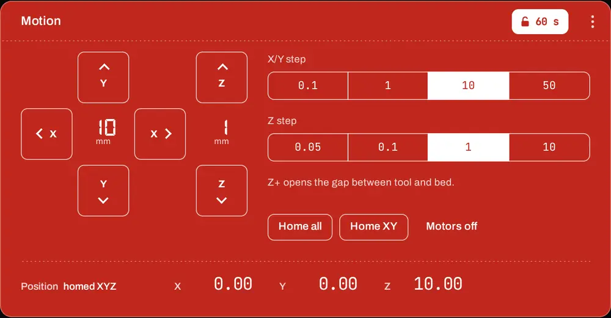
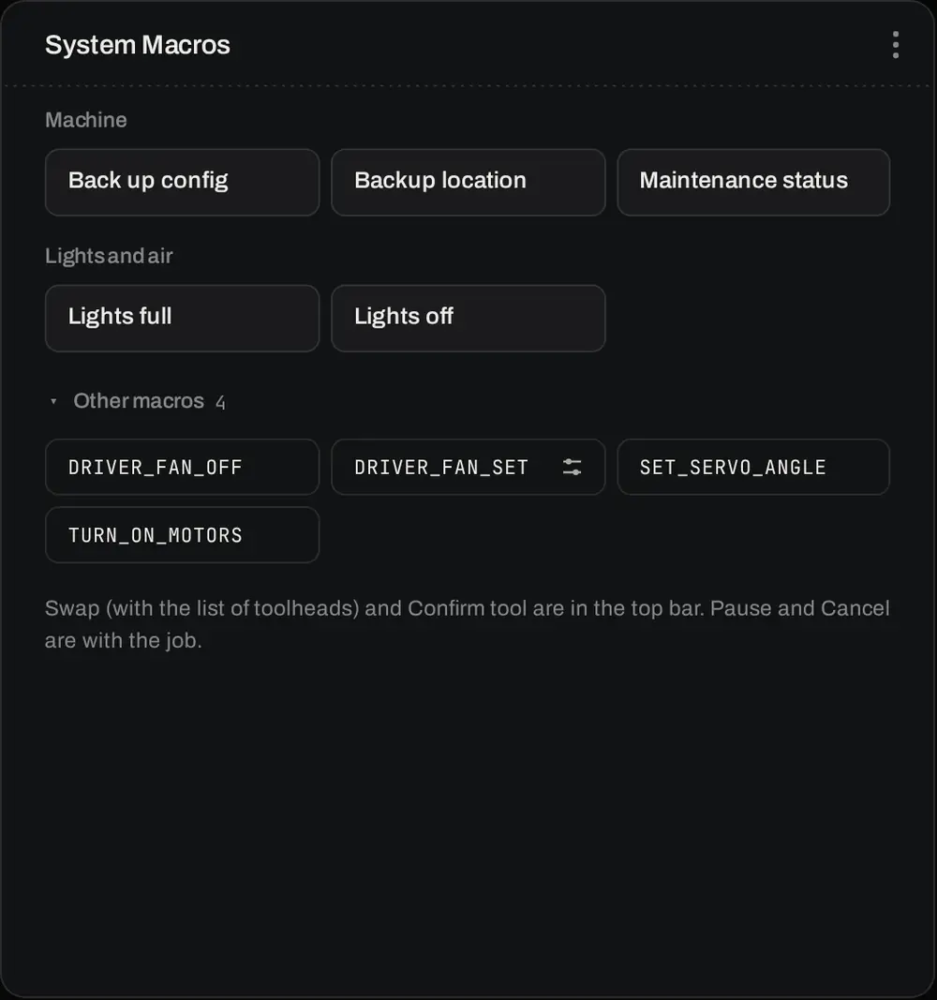
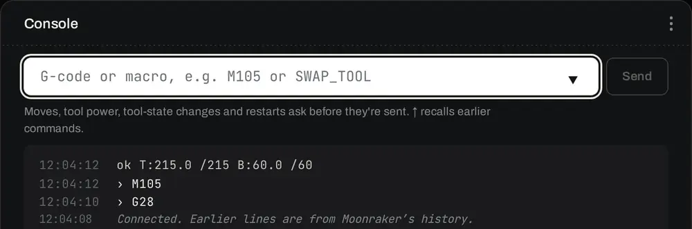

Control runs the machine: what the tool is doing, the job, live tuning, jogging, the camera, macros and the console. The panels shown depend on the mounted tool. Flow and Speed appear only with a print head.
The status box
Across the top: the toolhead (its slot, and whether Klipper has confirmed it), then the readings for that tool, then the job.

The status box during a print: the head, hotend, bed, part fan and the job
Readings. A print head shows the hotend, the bed and the part fan; a laser shows its power and body temperature; a spindle shows its throttle and body temperature. With no tool mounted, only heaters that are on or still hot show. The small graph beside a temperature shows how it has gone over the last few minutes.
Setting a temperature. Click the number, type the new target and press Enter; 0 switches the heater off, and Esc leaves it as it was. The hotend can be heated only with a confirmed print head mounted; switching off is always allowed.
The job. How far it has got, the file and a progress bar, with Cancel print (asks first) and Pause or Resume. Resume asks first; Pause doesn't. When no job is running it says Start a job from Files.
Tool macros. The row under the box holds the mounted tool's own macros. Show … for other tools lists the rest.
Flow and Speed: live tuning
Both panels change the machine as it works, so they sit behind the padlock. The values last until Klipper restarts. A print's own settings from the job file, and what the Rhino applies at job start, come back with the next job.

Flow: flow, pressure advance, and feeding filament
Flow: 50 to 150 %, in 1 % steps or with the slider.
Pressure advance: the advance and its smooth time.
Feed filament: pick a length (1 to 50 mm) and speed, then Extrude or Retract; the nozzle must be hot. Not while a job is running. Path picks T0 or T1 on SwitchFly.
Speed: speed, Z offset and the speed limits
Speed: 10 to 300 % of the job's speeds.
Z offset: Closer and Farther move the nozzle in the chosen step, at most 0.05 mm a press, also during the first layer of a print. Reset takes your changes back out. To keep a first-layer height for good, use First-layer squish (see Tuning a print head).
Limits: top velocity and acceleration, until Klipper restarts.
Motion
Jogging, homing and switching the motors off. The panel is locked to start with; press the padlock to jog. It stays unlocked for 60 seconds after your last press, with the seconds shown on the padlock.

Motion, unlocked: one press is one step
Pick an X/Y step (0.1, 1, 10 or 50 mm) and a Z step (0.05, 0.1, 1 or 10 mm). One press moves one step. Z+ opens the gap between the tool and the bed.
An axis can be jogged only once it is homed, and only with a confirmed tool. Moves stop at the machine's travel limits.
Home all, Home XY and Motors off ask first.
Jogging locks while a job runs, and when you leave the page, the connection drops, or the tool changes.
Camera
The picture from the Rhino's cameras; the arrows step through them, and the count shows which one you're looking at. Cameras are added under Settings › Cameras.
Macros
Each macro is a key. The mounted tool's macros come first; System Macros are the same whatever is mounted, grouped by area, with Other macros folded at the end. A key with a sliders mark takes values: pressing it asks for them, with the allowed range. Macros you make yourself (Settings › Your macros) have their own group.

System Macros, grouped by area
Hardware
When the Rhino has system hardware with live controls, such as a case light, an exhaust fan or a chamber heater, the Hardware panel shows each one with its reading and a control to set it, behind the padlock. Tool outputs never appear here: a tool's power is switched by its wizard or a confirmed console command.
Console
Type a G-code command or macro and press Enter or Send; ↑ brings back earlier commands. Klipper's replies appear underneath, newest at the top, together with lines from before you connected.

The console, newest line at the top
A command that moves the machine, switches tool power, changes the mounted tool or restarts Klipper asks first, with what it will do: